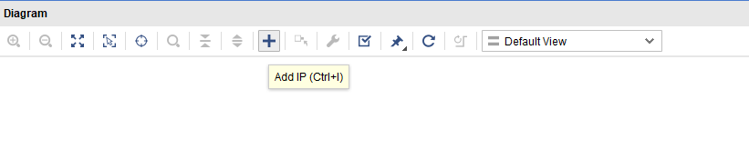
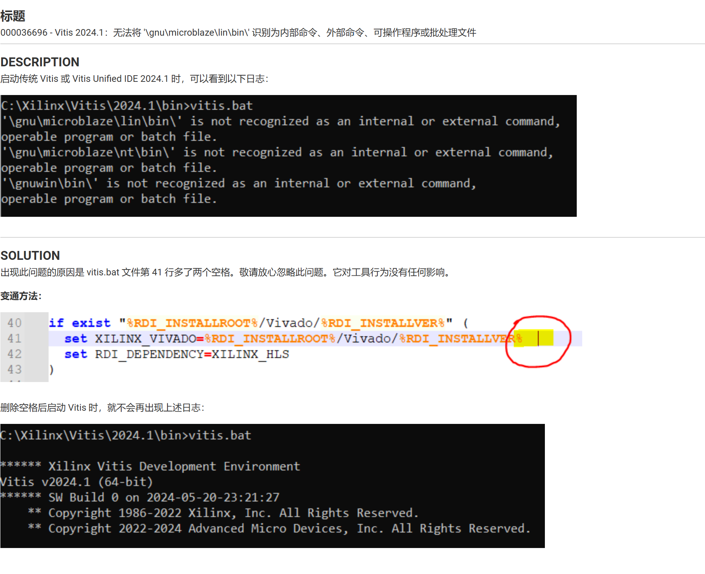

ZCU102初步-HelloWorld
写在开头
本文讲述了 Xilinx Zynq UltraScale+ MPSoc ZCU102 从开箱到运行第一个程序-HelloWorld 的全部过程。
机器自检
如果是初次拿到 ZCU102 这块板子，个人非常建议在使用之前按照随箱附带的手册进行自检。因为对 ZCU102 的 QSPI Flash 进行烧写后，这段位于 QSPI Flash 自检程序将会被删除。
具体操作参看手册。
Vivado 硬件设计
以截止文章发表时最新的 Vivado 2024.1 为例
安装注意事项
由于涉及到了后续的软件开发，所以需要安装 Vivado SDK 该工具在 Vivado 2019.2 后合并到了 Vitis 中，所以需要安装 Vitis Embedded Development。
其次，由于基于 ZCU102 开发，所以 Production Devices 中需要使用 SoCs 和 UltraScale+
笔者使用的安装如下：
创建硬件工程
打开 Vivado -> Create Project
Project Name 自行拟定
Project Type 选择 RTL Project，勾选 Do not specify sources at this time。
因为我们不会用到 .v .sv 这样的 RTL 文件。
Default Part 切换到 Boards，找到并选择 ZCU102 板卡
最后配置如图，点击 Finish
创建 MPSOC
由于 UltraScale+ MPSOC 都是已经配置好的，所以在 IP INTEGRATOR 下直接 Create Block Design 即可。 该选项将创建.bd文件
Create Block Design 名字自选。
开始进行作图式硬件设计，点击 ‘+’ 号。

搜索 Zynq 选择如图所示的 IP 核。
最终如图所示
配置 MPSOC
双击 MPSOC 图标打开 MPSOC 配置界面。
配置 UART，由于创建的 MPSOC 只是 UltraScale+ 的，而不是针对 ZCU102 的，所以 MIO 的配置需要参考 ZCU102 的原理图，如下：
这里放一个 ZCU102 原理图下载链接，需要可以自取。
其余配置如图，也可以参考 ZCU102 用户手册自行配置。
DDR 配置需要注意一点，新版的 ZCU102 如果是镁光的话，可能会是 16bit 位宽的 DDR。所以不再能使用默认配置，需要进行修改。
- 首先点击默认的镁光 DDR，选择 YES
- 修改 DRAM Device Capacity 为 8192，Row Address Count 为 16。剩下不变，点击 OK 完成所有配置。
- 首先点击默认的镁光 DDR，选择 YES
最后连接时钟线，防止报错
生成 bit 流文件
验证设计的正确性
出现如下图所示，即为设计正确。

verilog 化 bd 文件
切换到 Source 试图，点开 Design Sources 文件夹，右键 .bd 顶层文件，点击 Generate Output Products 生成输出产物，该选项会以 .v 的形式生成 .bd 的下一层，里面包含了该 .bd 使用的所有核。综合选项如下：
其中，Global 代表全部综合，Out of context per IP 代表综合改变的 IP 核，Out of context per Block Design 代表综合改变的 bd 文件。
让 bd 可综合实现
和上一步类似，右键 .bd 顶层文件，点击 Create HDL Warpper，选择 Let vivado manage warpper and auto-update。前者将 .bd 用一个 .v 形式的 warpper 包裹起来，使其可以综合实现。后者决定了该 warpper 的生成是 vivado 自动生成的。
生成 bit 流
到这一步，即可和一般开发流程一样直接点击 Generate Bitstream. vivado 会自动完成 综合、实现、生成比特流。
耐心等待一会，可以查看右上角来看自己进行到了哪一步，出现下图即为生成成功
此时已经在工程目录下生成了bit文件：xx/xx.runs/imple_1/xxx_wapper.bit
生成 xsa 文件
因为涉及到了 FPGA 上的软件开发，所以需要使用 vitis，而在 vivado 中对板子的配置就记录在了 xsa 文件中，有了 xsa 文件，在编写软件时就可以忽略硬件。具体生成方式如图：
是否勾选 bit 流则取决于是否用到了 PL，由于本文尝试烧写 Flash，也算是进行了修改所以勾选上，之前生成的 bit 流将会被复制到所选的目录。
Vitis 软件设计
有了硬件描述的 xsa 文件，可以在此基础上进行软件开发。
创建 platform 组件
首先利用 xsa 文件，因此要先将工作空间创建到我们之前保存 xsa 文件的位置。
打开后，就要使用 xsa 文件来创建 Platform Component，此为 Vitis 使用 xsa 文件的方法。

Name and Location 中，Location 就是工作目录，名字随意。
在 Flow 中，选择 Hardware Design，点击 browse 来选择 xsa 文件
- 之后在 OS and Processor 中，Vitis 会自动读取 xsa 配置，提供出可选项，我们只是开发一个程序，所以选择 standalone + cortexa53_0，即使用 ps 的 0 核，并且勾选 FSBL （理解为 bootloader）
一路确定即可。
创建好后 点击一下 build 将构建出板子对应的 fsbl.elf,出现对号此步骤即完成，在 Output - plaform - sw - boot 下将看到产物。
创建 helloworld 示例
回到欢迎页，点击 Examples
选择 Hello World ，点击 + 号，之后的 Name and Location 和前面类似，Hardware 选择刚才创建好的 Platform, domain 选择刚才创建好的 Platform 里面的 CPU（a53_0），完成即可。
Build 一下 创建好的 Hello world，此时，所有的编写工作就都完成了，接下来就是烧写和启动。
创建 Boot.bin
直接点击 Hello world 下的，Create Boot Image，该选项直接按照顺序将 fsbl + wrapper.bit + hello_world.elf 合在一起生成 Boot.bin，只需要指定输出目录即可。
烧写和启动
准备工作
首先按照图示连接 uart、jtag 线，jtag 用于烧写 QSPI Flash，uart 用于串口通信，连接后打开电脑的设备管理器，理应出现下面的设备：
其中，COM1通信端口对于 jtag，其余四个对应 uart。如果只有通信端口，那么则可能是本机没有安装 usb 转 uart 的驱动，可以到这里来安装
CP210x USB to UART Bridge VCP Drivers. 安装完即可正常显示。
下载一个与串口交互的软件，这里使用 MobaXterm，连接到 uart0 串口，即上图中的 Interface 0
烧写
回到 Vitis，查看是否 Vitis 识别到了 Jtag，点击导航栏的 Vitis - Target Connections。
双击 Local，打开配置界面，点开 Advance，观察是否有设备出现，如果有，则说明 Vitis 成功识别到了该 FPGA 板子
同样的，点击导航栏的 Vitis - Program Flash，选择好刚才要启动的 Boot.bin，Flash 模式写为很早之前在硬件配置的 Dual Para。Flash Density 可以随意。
Progarm 启动后可能会遇到报错，如果遇到这样的报错：
则一般实际上的报错是：
这个问题比较抽象，解决方法是右键桌面图标 Vitis Console，以记事本编辑，删掉下图中的两个空格：

等待烧写，可以在界面看到烧写进度，出现如下图类似的输出即为烧写成功。
启动
关掉 ZCU102 板子，将 MobaXterm 打开，连接到 UART0 ，启动 ZCU102 观察是否有下图输出，有则证明全过程正确，本文结束。